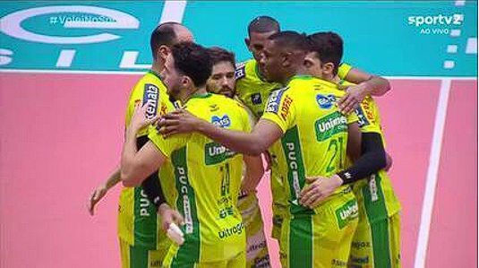
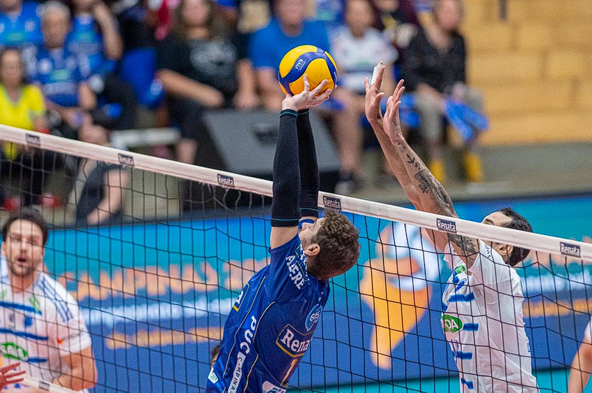
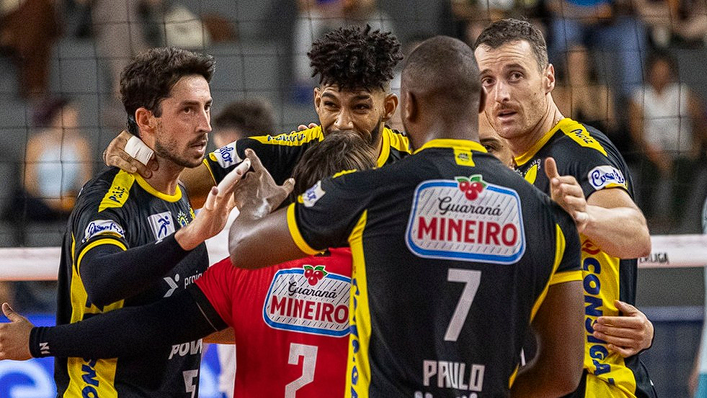
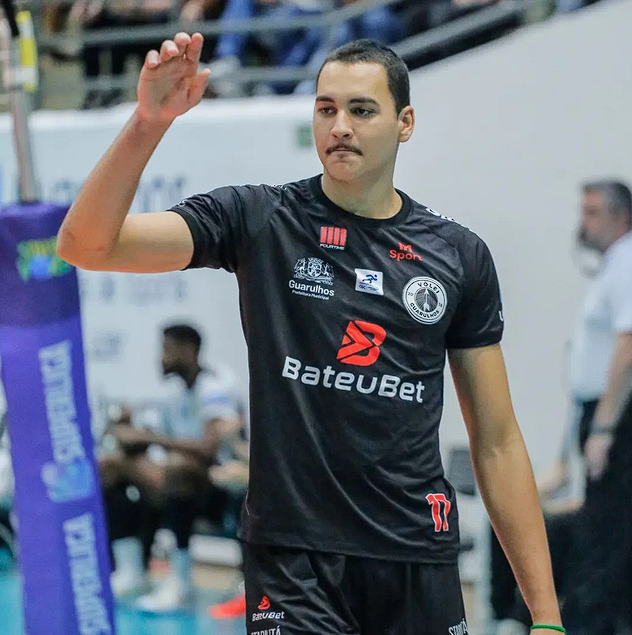
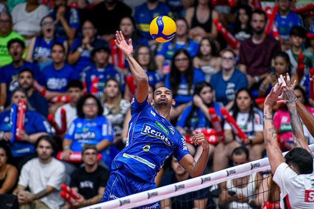

Campinas venceu o Cruzeiro na última rodada da fase classificatória; veja melhores momentos
Os playoffs da Superliga Masculina começarão neste sábado, com oito times classificados para as quartas de final: Cruzeiro, Campinas, Praia Clube, Minas, Suzano, Guarulhos, Monte Carmelo e Goiás. De forma natural, há favoritismo dos cruzeirenses, líderes da fase classificatória e dominantes na era recente da competição – são três títulos nas últimas quatro edições. Mas a equipe mineira tem uma forte ameaça: o Campinas, que vem de dois vice-campeonatos consecutivos no torneio nacional. Consultados pelo Sportx, os comentaristas Nalbert, Fabi Alvim e Marco Freitas ressaltaram a força da equipe paulista.
O Campinas, inclusive, teve a mesma campanha do Cruzeiro na primeira fase da Superliga. As duas equipes terminaram com 17 vitórias e cinco derrotas, mas os mineiros somaram mais pontos (54 a 51).
- O desenho da temporada nos dá a indicação de que essas duas equipes são favoritas ao título. Mas, de uma certa forma, isso sacode a dinastia do Cruzeiro, porque Campinas divide o protagonismo. A equipe mineira vinha sendo soberana no cenário nacional, mas os campineiros têm conquistado torneios importantes, como a Copa Brasil e o Sul-Americano. Se ganharem a Superliga, vão chegar à Tríplice Coroa – disse Marco Freitas.

Cruzeiro e Campinas são apontados como principais favoritos ao título da Superliga 2025/2026 — Foto: Pedro Teixeira/Vôlei Renata
As vitórias do Campinas na Copa Brasil e no Sul Americano, inclusive, foram em finais contra o Cruzeiro. o time mineiro, por outro lado, levou a melhor na decisão da Superliga de 2024/2025. Ou seja, as duas equipes têm protagonizado jogos importantes e se mostram acostumadas à disputa por títulos.
Campinas 3 x 2 Cruzeiro | Melhores Momentos | Final | Sul-Americano de Vôlei 2026
Nas quartas da Superliga desta temporada, o Campinas vai encarar o Monte Carmelo, sétimo colocado na fase classificatória. O primeiro jogo será às 18h30 (de Brasília) deste sábado (4). Logo na sequência, às 21h (também de Brasília), o Cruzeiro abrirá sua série contra o Goiás, dono da melhor campanha até agora. O Sportx transmitirá todas as partidas dos playoffs.
Os outros confrontos, sempre decididos em melhor de três jogos, são Praia Clube x Guarulhos e Minas x Suzano. Nalbert ressalta um fator comum nos playoffs: a força coletiva das equipes.
- De uma forma geral, os times não se sustentam em um único jogador que pode desequilibrar. Analisando as equipes classificadas aos playoffs, vejo méritos coletivos. Campinas tem um time bem encaixado, com jogadores experientes, por exemplo. Praia também conta com um grupo muito forte. Não enxergo um cenário propício para a aparição de um Darlan, que bateu recordes e recordes na temporada do título do Sesi-Bauru (em 2023/2024), por exemplo - avaliou o comentarista.

Praia Clube é um dos classificados para os playoffs da Superliga Masculina — Foto: Bruno Cunha/Praia Clube
Ainda que o coletivo seja um ponto forte das equipes da Superliga Masculina, também houve jogadores que se destacaram individualmente. O maior pontuador da fase classificatória foi o jovem Bryan, de apenas 20 anos. O oposto do Guarulhos derrubou 440 bolas, 49 a mais do que Sabino, do Suzano, segundo colocado no ranking da competição.
Para Fabi Alvim, o poderio ofensivo de Bryan pode ser um diferencial nas quartas de final:
- O Bryan foi o grande destaque da primeira fase. Menino jovem, grande definidor, que certamente estará no radar da seleção brasileira. Ele pode tentar surpreender para Guarulhos nos playoffs. A equipe não tem tanta responsabilidade assim, porque encara um Praia forte, com caras que podem ajudar demais também.

Bryan foi o maior pontuador da fase classificatória da Superliga Masculina — Foto: Reprodução
A comentarista ainda apontou atletas que assumiram o protagonismo em outros times:
- Do lado do Goiás, o (André) Saliba foi referência. Suzano tem o Sabino, mais um atleta muito interessante de acompanhar, segundo maior pontuador da Superliga, e o Robert. Pelo Minas, podemos destacar o Samuel, outro jovem aproveitado no clube, e o Léo Lukas, que cresceu bastante.
Na visão de Marco Freitas, o grande nome da fase classificatória da Superliga foi Adriano, do Campinas. O ponteiro, presença constante nas convocações da seleção brasileira, se tornou um dos principais trunfos do levantador Bruninho, que não pôde contar com o argentino Bruno Lima por alguns meses, devido a problemas físicos.
- Se fosse fechar a Superliga agora, na minha opinião, o Adriano seria o melhor jogador do campeonato. O nível de competição trazido pelo Bruninho também explica muito o sucesso do Campinas. Um levantador como ele deixa qualquer time intenso, competitivo - analisou Freitas.

Adriano em ação na Superliga Masculina 2025/2026 — Foto: Pedro Teixeira/Vôlei Renata
Com tantos destaques em ação e dois favoritos bem definidos, a Superliga Masculina precisará ser decidida em quadra. A grande final da temporada ocorrerá no dia 10 de maio, no Ginásio do Ibirapuera, em São Paulo.
1º jogo: sábado, 4 de março, às 21h - Poliesportivo do Riacho (MG) - Sportx, sportv2
2º jogo: quinta-feira, 9 de abril, às 21h - Ginásio Rio Vermelho (GO) - Sportx, sportv2
3º jogo (se necessário): quarta-feira, 15 de abril, às 21h - Poliesportivo do Riacho (MG) - Sportx, sportv2
1º jogo: sábado, 4 de março, às 18h30 - Ginásio do Taquaral (SP) - Sportx, sportv2
2º jogo: quinta-feira, 9 de abril, às 18h30 - Raul Belém (MG) - Sportx, sportv2
3º jogo (se necessário): quarta-feira, 15 de abril, às 18h30 - Ginásio do Taquaral (SP) - Sportx, sportv2
1º jogo: domingo, 5 de abril, às 17h - Ginásio do UTC (MG) - Sportx, sportv2
2º jogo: sexta-feira, 10 de abril, às 18h30 - Ginásio da Ponte Grande (SP) - Sportx, sportv2
3º jogo (se necessário): quinta-feira, 16 de abril, às 18h30 - Ginásio do UTC (MG) - Sportx, sportv2
1º jogo: domingo, 5 de abril, às 20h - Arena UniBH (MG) - Sportx, sportv2, ge tv e ge.globo
2º jogo: sexta-feira, 10 de março, às 21h - Arena Suzano (SP) - Sportx, sportv2, ge tv e ge.globo
3º jogo (se necessário): quinta-feira, 16 de março, às 21h - Arena UniBH (MG) - Sportx, sportv2, ge tv e ge.globo
*Todos os horários estão no fuso de Brasília. O vencedor de Cruzeiro x Goiás vai encarar o ganhador de Minas x Suzano na semifinal. Quem passar de Campinas x Monte Carmelo pegará Praia Clube ou Guarulhos na fase seguinte.
Por João Pedro Oliveira da Silva — Rio de Janeiro
03/04/2026 05h055